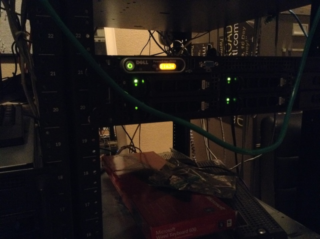
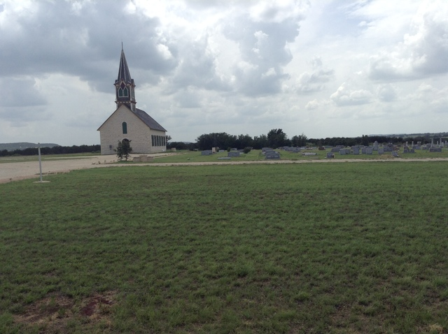

I'd like to start by confirming for regular readers that the phone server update went as well as I could have hoped. After watching my setup script fail beautifully about ten times, I finally walked away with a working phone system at around 4:00 last Sunday night, upgraded and configured for easy maintenance. I've been making little tweaks to it all week and have fixed some of the odd quirks that the system used to have, also.

With that done, I'd like to transition to the main happenings of last week: a meeting of the Ethne missionary group to discuss global plans. About twenty new people were staying on the farm, which doubled the number of people usually staying here. Every bed was filled with missionaries who had come back from Southeast Asia, Africa, and the Middle East.
My goal this week was to hear as many interesting stories as possible from this interesting group. They all said that they followed God's voice wherever they were supposed to go, and it led them to completely unexpected places and peoples. One went to work with the Kurds (an ethnic group in the Middle East) when she felt a draw only when hearing the name of the people group. Another went to Southeast Asia after hearing the name of the city several times within a week, right when he began to pray about it. It was a pretty great testiment to the power of listening to God because of the great work they've done in the years they've had overseas.
We worshipped together every morning, which was a great experience. We got to spend one morning in the old rock church. It was built in the 1800s and was rennovated to be as close to the original look as possible. It was a wonderful space to share in such powerful worship.

The last of the missionaries left yesterday morning. It's going to get back to normal now, to an extent. Loren and his wife Deb are planning on taking Jachin and I on a church tour to a bunch of different denominations as an educational experience, which I'm really excited about. We'll be going to two churches each week just to learn about them. We're all excited to start that.
I have a feeling a lot of this week is going to be cleaning up the not-so-tidy configuration that I put together for the phone server and trying to figure out the best way to restring phones across to the distant houses. I'm going to need all the patience God can give me for that task!